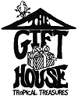

Welcome to The Gift House, Key Largo, featuring beautiful hand-crafted gift items of the Caribbean islands and our own local Florida Keys artists. Thousands of Gift Items! Home decor, art and curios from around the world... and stuff for kids of all ages.
Welcome to The Gift House, Key Largo, featuring beautiful hand-crafted gift items of the Caribbean islands and our own local Florida Keys artists. Thousands of Gift Items! Home decor, art and curios from around the world... and stuff for kids of all ages.
Take home memories of your Florida Keys visit, enhance your tropical home decor, or make someone feel special with a unique gift.
Sip some wine and sample the ice-creams and decadent deserts!
|
Bridal Registration also Available!
Private, intimate tropical courtyard for wedding celebrations |
- Wedding Receptions
- Wedding Rehearsal
|
- Engagement Parties
- Bridal Showers
|
Courtyard catering provided by The Fish House Restaurant
|
|
Featuring the Keys Largest and Most Unique Selection of:

Contact us for more information, or to order by mail.
The Gift House
102341 Overseas Highway
Key Largo, FL 33037
(305) 451-0650
|

| |
|
 |
Visit The Fish House, Key Largo (right next door!),
for the Florida Keys finest seafood and more!
|
HTML production and Copyright © 2000,
Keys Technologies.
All rights reserved.
Tell them you saw it on the "Pennekamp Page!"
|